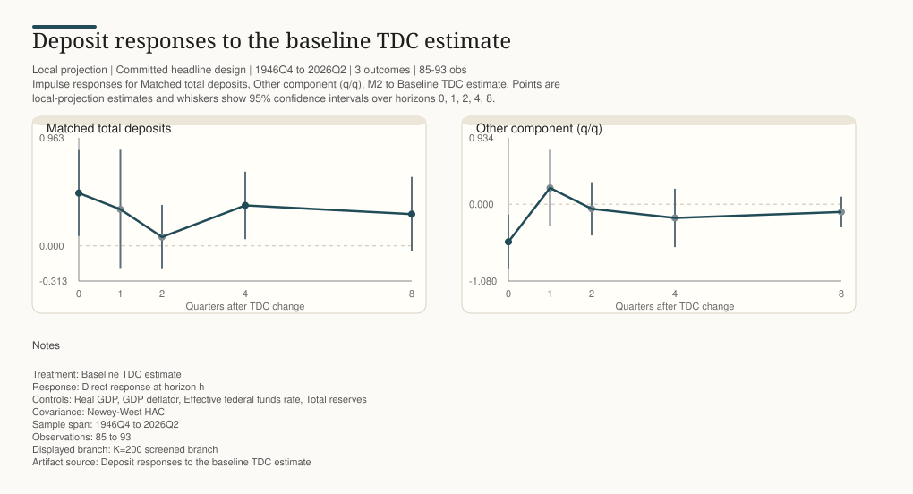

Main Figure 1
Long-history Tier 2 selected-lag pass-through
Local projection | Committed headline design | 2002Q1 to 2025Q4 | 2 outcomes | 88-96 obs
Impulse responses for Matched total deposits, Other component, same Tier 2 treatment to Long-history Tier 2 TDC. Points are local-projection estimates and whiskers show 95% confidence intervals over horizons 0, 1, 2, 4, 8.
Generated at: 2026-06-10T22:58:24+00:00
Filled dark points indicate estimates with p < 0.10.

Notes Treatment: Long-history Tier 2 TDC Response: Direct response at horizon h Controls: Real GDP, GDP deflator, Effective federal funds rate, Total reserves, Tier 2 method-tier control, Strict loan-core lag 2, Strict loan-core lag 4, Consumer-credit lag 4, Bank-credit lag 4, 2Y Treasury-yield lag 4, 10Y Treasury-yield lag 1, 10Y Treasury-yield lag 2, Dflmx K100 F1, Dflmx K100 F2, Dflmx K100 F3, Dflmx K100 F4 Covariance: Newey-West HAC Sample span: 2002Q1 to 2025Q4 Observations: 88 to 96 Scale: coefficients are $B responses per +$100B TDC. Run/specification: regression_mmf_rrp_bank_long_selected_credit_rate_lags. This paper-facing branch adds selected lagged credit and Treasury-rate controls before the K=100 factor tail. Claim boundary: deposit pass-through is the headline; broad mortgage/core-loan crowding-out is weak after selected lags. Artifact source: Long-history Tier 2 selected-lag pass-through
{kind=link}